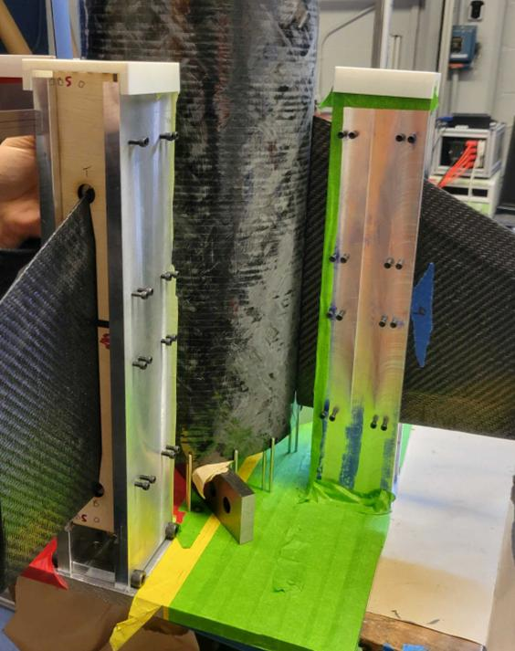
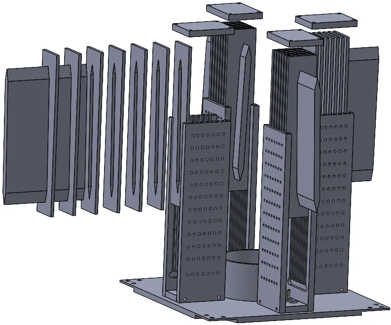
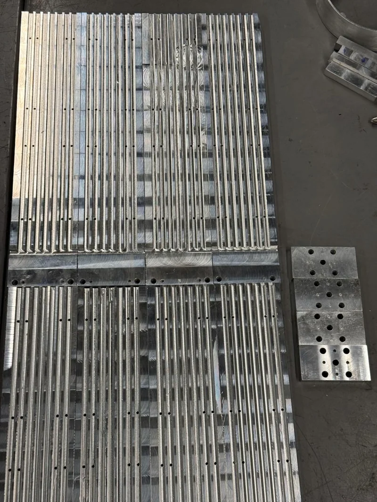
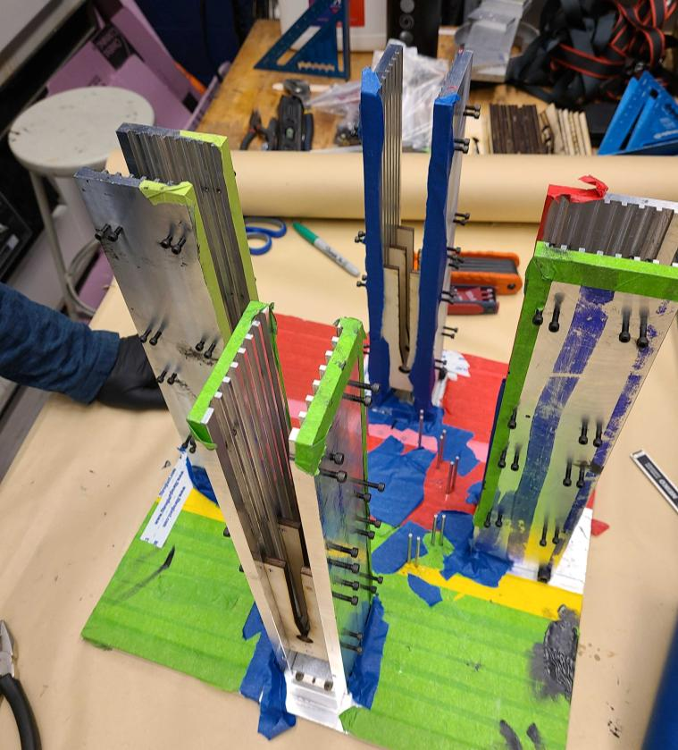
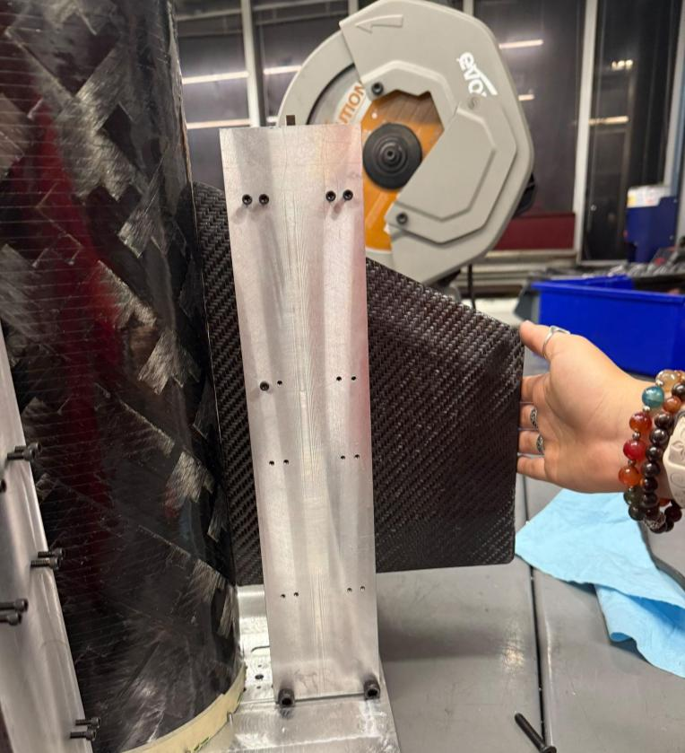
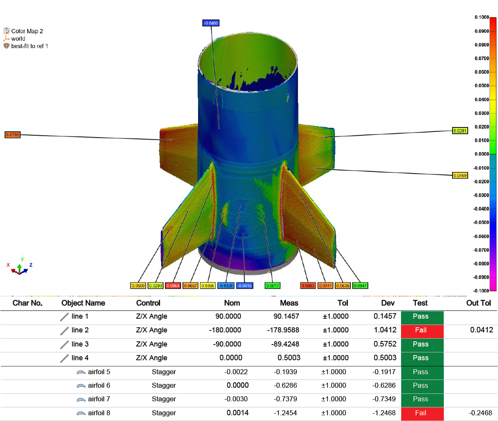
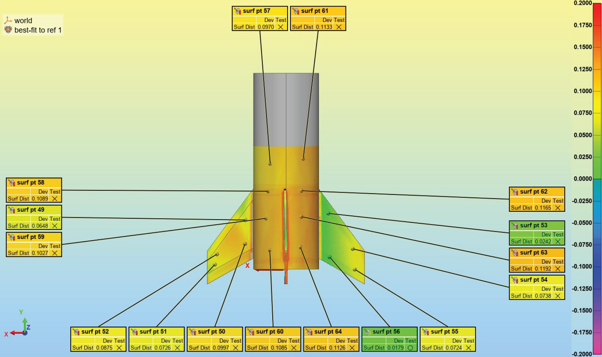

GTXR / Precision tooling
Modular fin-alignment tooling
A four-tower fixture to establish fin cant across changing rocket diameters and fin profiles.


Objective
Set each fin to the 1.6° target while accommodating different vehicle diameters and fin designs.
I designed the modular fixture and aided in CAM programming and machining the hardware.
Error on all four fins, verified by independent metrology.
From fixed concepts to modular towers
Early concepts used a single tower or fixed geometry. I iterated to four modular towers, one constraining each fin, to accommodate different rocket diameters and fin profiles.
Laser-cut slots match the fin profiles and establish the 1.6° cant.




Manufacture and assembly
I aided in CAM Programming and machining the modular hardware.




Independent verification
Independent metrology verified all four fins within <0.1° of the 1.6° target. The modular structure supports changing rocket diameters and fin profiles.
Before and after alignment
Before the fixture was introduced, the fin inspection report recorded failures in both angular alignment and stagger criteria. After using the alignment fixture, the team reported no dimensional failures. The reports below document the comparison.



